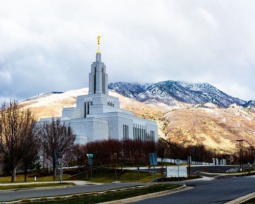
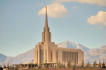
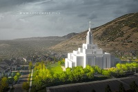

Temple Album
Home
Old
New
Large
Small
Beautiful Temples of the Church

Salt Lake City Temple

Rome Italy Temple

Laie Hawaii Temple
Manti Utah Temple
Quetzaltenango Temple
Kinshasa DRC Temple
Accra Ghana Temple
Aba Nigeria Temple
Cedar City Temple